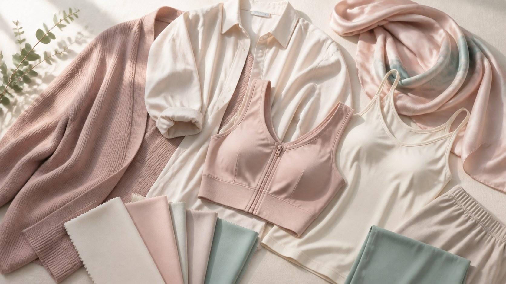

日常美化穿搭
医美后的穿衣注意事项｜给恢复期的身体多一分体贴
手术或治疗后的一段时间，身体需要被温柔以待。穿衣时放松一些、避开摩擦与勒压，就是给恢复中的自己最好的照顾。

做完胸部相关的手术或治疗后，很多人会第一时间纠结穿什么。这时的身体正在恢复期，需要的不是好看，而是温和与松弛。如果穿衣不当，紧绷、摩擦或勒压，都可能给恢复添乱。与其事后补救，不如提前把「穿」这件事安排得妥帖一点。
恢复初期，宽松是关键。选择不贴身、不紧绷的上衣和内衣，让伤口或治疗区域有足够的空间，避免衣服直接压在敏感部位。无钢圈、无压迫感的内衣，或医生建议的专用款式，通常更能配合恢复。这段时间，舒服和安心远比「看起来如何」重要。
减少摩擦同样重要。尽量避开有硬接缝、粗糙蕾丝或硬装饰的衣物，它们可能在活动时反复摩擦皮肤。柔软、亲肤、缝线平顺的面料会更友好。肩带是否压到敏感位置，也值得核对。穿脱时动作放轻、放慢，别慌张地拉扯。
行动也要跟着调整。抬手、扭转、弯腰这类动作，在恢复期尽量幅度小一些，穿脱衣物时多给自己留一点时间。如果需要帮忙，别不好意思开口。前几次换衣，不妨先照着镜子慢慢来，熟悉哪些动作顺、哪些会牵拉到，心里就有数了。恢复不是越快越好，而是稳稳当当、循序渐进。放宽心，让身体按自己的节奏来。
什么时候能恢复正常穿衣？这个问题没有统一答案，因人、因手术和治疗方式而异。最重要的是听医生的安排。恢复良好的朋友，可能很快就能回到日常；情况复杂一些的，则需要更长的时间。别拿别人的进度来衡量自己。感到不适或拿不准时，及时咨询医生，而不是硬撑或自行判断。
说到底，医美或治疗的终点，是让自己更舒心，而恢复期的小心，正是对自己负责。穿衣的克制与温和，不是将就，而是照顾。等身体好了，你自然会回到穿什么都自在的状态。在那之前，请允许自己慢下来，把温柔留一部分给正在努力的自己。
本文用于公众健康教育，不构成医疗建议，不替代面诊。医美决策请与具备资质的医师面诊后作出。